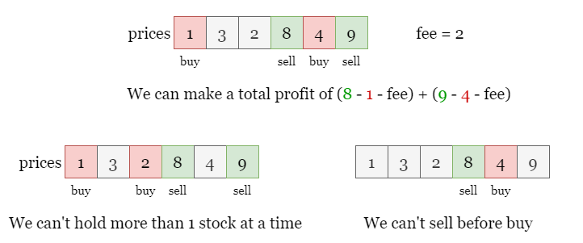
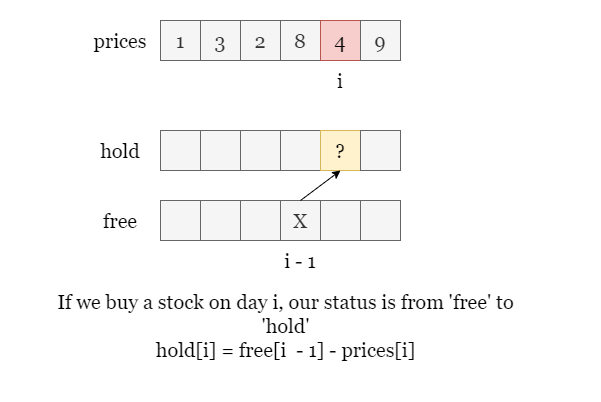
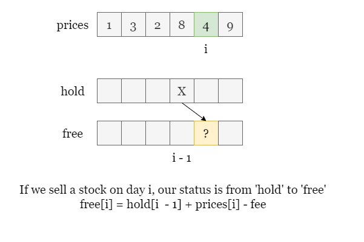

As shown in the picture below, if we do the following operations:
0.3.4.5.Considering the two transaction fees, we can make a total profit of 8.

However, we have to be aware of some restrictions:
If you are not familiar with dynamic programming, please refer to our Dynamic Programming Explore Card!
Given the length of prices is n, which means that we want to get the maximum profit after
n days. Assume that we are on day i, the profit we can make today is determined by today's
operation plus the maximum profit we have made before. The question is, how do we get the maximum profit that can be
obtained from the previous i days?
We can perform one of the three operations on day i:
The profit depends on our operations and the maximum profit obtained from the previous i - 1 days. To
solve the problem on day i, we need to use the sub-problem of day i - 1. This state
transition equation implies that we can solve it with dynamic programming.
Let's first try the most basic dynamic programming approach. We create an array called dp of length
n where dp[i] records the maximum profit we can obtain from the first i days.
Next, we need to find the state transition equation. Recall that we have three operations on day i:
prices[i].prices[i].But this solution above is incorrect because of the constraints given in the problem. Let's analyze
where the problem lies. On the day i, if we want to sell the stock, the prerequisite is that we must
hold the stock. However, we might have two different status on day i:
Currently holding the stock.
Not currently holding the stock.
The state transition equation in our previous method did not distinguish between these two states.
Therefore, our dynamic programming array dp[i] should also have two states:
So, we would need to create two arrays, which we call free and hold, corresponding to the
maximum profit that can be obtained without holding the stock or holding the stock in the first i days.
Back to the previous analysis, if we buy the stock on the day i, the profit obtained is the maximum
profit without holding the stock on the previous day i - 1 free[i - 1] plus the profit from buying the
stock -prices[i].

If we sell the stock on the day i, our state changes from holding the stock to not holding the stock, so
our current profit is the maximum profit of holding the stock on the previous day i - 1 hold[i - 1]
plus the profit from selling the stock prices[i] - fee.

Of course, we can also choose to do nothing, in which case our profit on day i is equal to the maximum
profit of the previous day.
free[i] = free[i - 1]hold[i] = hold[i - 1]Therefore, we can get the state transition equation for the maximum profit with different states on day
i as:
free[i] = max(free[i - 1], hold[i - 1] + prices[i] - fee)
hold[i] = max(hold[i - 1], free[i - 1] - prices[i])
Once we create these two arrays, we will set free[0] = 0 since we will make no profit with an empty hand
on the first day, and set hold[0] = -prices[0] as we need to buy the stock on day 0 to
maintain the holding state.
Then we iterate from day 1 to day n - 1, update free and hold and
get the maximum profit from the last day free[n - 1]. (There is no point in ending the problem while
still holding stock, we might as well sell it on the last day)
Create two arrays of length n, free and hold. Set hold[0] =
-prices[0] and free[0] = 0.
Iterate from day 1 to day n - 1, on each day i:
hold[i] to the larger of hold[i - 1] and free[i - 1] -
prices[i].
free[i] to the larger of free[i - 1] and hold[i - 1] + prices[i]
- fee.
Return free[i - 1] once the iteration ends.
Java
class Solution {
public int maxProfit(int[] prices, int fee) {
int n = prices.length;
int[] free = new int[n], hold = new int[n];
// In order to hold a stock on day 0, we have no other choice but to buy it for prices[0].
hold[0] = -prices[0];
for (int i = 1; i < n; i++) {
hold[i] = Math.max(hold[i - 1], free[i - 1] - prices[i]);
free[i] = Math.max(free[i - 1], hold[i - 1] + prices[i] - fee);
}
return free[n - 1];
}
}
C++
class Solution {
public:
int maxProfit(vector& prices, int fee) {
int n = prices.size();
vector free(n, 0), hold(n, 0);
// In order to hold a stock on day 0, we have no other choice but to buy it for prices[0].
hold[0] = -prices[0];
for (int i = 1; i < n; i++) {
free[i] = max(free[i - 1], hold[i - 1] + prices[i] - fee);
hold[i] = max(hold[i - 1], free[i - 1] - prices[i]);
}
return free[n - 1];
}
};
Python3
class Solution:
def maxProfit(self, prices: List[int], fee: int) -> int:
n = len(prices)
hold, free = [0] * n, [0] * n
# In order to hold a stock on day 0, we have no other choice but to buy it for prices[0].
hold[0] = -prices[0]
for i in range(1, n):
hold[i] = max(hold[i - 1], free[i - 1] - prices[i])
free[i] = max(free[i - 1], hold[i - 1] + prices[i] - fee)
return free[-1]
Let nn
be the length of the input array prices.
Time complexity: O(n)O(n)
1 to day n - 1, which contains n - 1 steps.
free[i] and hold[i] which takes O(1)O(1).
Space complexity: O(n)O(n)
n to record the maximum profit with two status on each day.
In the previous solution, we created two arrays of length n to record the maximum profits up to each
day.
However, if we look at the state transition equation:
hold[i] = max(hold[i - 1], free[i - 1] - prices[i])free[i] = max(free[i - 1], hold[i - 1] + prices[i] - fee)We can see that the maximum profit up to day i (hold[i] or free[i]) only
depends on the maximum profit up to day i - 1 (hold[i - 1] and free[i - 1]),
and we don't need to keep track of the profits from earlier days.
Therefore, we can use only two variables hold and free to represent the maximum profits in
the two states on the current day. When we move to the next day (day i), we can simply update these two
variables.
hold = max(hold, free - prices[i])free = max(free, hold + prices[i] - fee)To avoid modifying hold before updating free, we can do the following:
tmp = holdhold = max(hold, free - prices[i])free = max(free, tmp + prices[i] - fee)Set free = 0 and hold = -prices[0] as the maximum profit for two status on day
0.
Iterate from day 1 to day n - 1, on each day i:
tmp = hold so that we record the maximum profit for holding a stock on day i -
1.
hold to the larger of hold and free - prices[i].free to the larger of free and tmp + prices[i] - fee.Return free once the iteration ends.
Java
class Solution {
public int maxProfit(int[] prices, int fee) {
int n = prices.length;
int free = 0, hold = -prices[0];
for (int i = 1; i < n; i++) {
int tmp = hold;
hold = Math.max(hold, free - prices[i]);
free = Math.max(free, tmp + prices[i] - fee);
}
return free;
}
}
C++
class Solution {
public:
int maxProfit(vector& prices, int fee) {
int n = prices.size();
int free = 0, hold = -prices[0];
for (int i = 1; i < n; i++) {
int tmp = hold;
hold = max(hold, free - prices[i]);
free = max(free, tmp + prices[i] - fee);
}
return free;
}
};
Python3
class Solution:
def maxProfit(self, prices: List[int], fee: int) -> int:
n = len(prices)
hold, free = -prices[0], 0
for i in range(1, n):
tmp = hold
hold = max(hold, free - prices[i])
free = max(free, tmp + prices[i] - fee)
return free
Let nn
be the length of the input array prices.
Time complexity: O(n)O(n)
We iterate from day 1 to day n - 1, which contains n - 1
steps.
At each step, we update free and hold which takes O(1)O(1).
Space complexity: O(1)O(1)
tmp, free and hold.